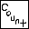
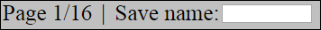

Growtopia Music Simulator Online
Instructions
Basic Controls
Click in the main area to place your currently selected note.
Right click to remove a note.
Scroll (or click the note button) to switch notes.
Button Explanation
 - Play the song from the beginning.
- Play the song from the beginning.
 - Shows your currently selected note. Can also be clicked to switch to the next note.
- Shows your currently selected note. Can also be clicked to switch to the next note.
 - Click to save your song. See the Saving and Loading section for more info.
- Click to save your song. See the Saving and Loading section for more info.

 - Click to switch pages. See the Page Explanation section for more details about pages..
- Click to switch pages. See the Page Explanation section for more details about pages..
 - Click to play the song starting from your current page.
- Click to play the song starting from your current page.
 - Click to set the beats per minute.
- Click to set the beats per minute.
 - Click to load. See the Saving and Loading section for more info.
- Click to load. See the Saving and Loading section for more info.
 - Click to see the number of a specific note is in your song. This button will count the note you've currently selected. EG - If I have piano notes selected, this button will count the number of piano notes.
Saving and Loading

The Save Name textbox is for entering the filename for when you save your song. After you've entered the filename you want in that box, press the save button to save your song. Saved songs are stored in files on your computer.
The yellow folder icon is for opening a saved song. Clicking on it will let you choose a file, select one of your save files. Once you've selected it, it will be loaded after a confirming that you really want to load a song.
Any type of Growtopia Music Simulator song file excluding Android ones can be loaded. Growtopia Music Simulator Online file, Growtopia Music Simulator Re;born, and (Original) Growtpoia Music Simulator Horrible.
Note that choose the filename for saving may not work on all browsers. And loading may not work on all browsers either. It is recommended that you use the latest version of Firefox or Google Chrome.
Page Explanation
A Growtopia world is 100 blocks wide. You can have four rows of music in one world. 100*4 is 400. So Growtopia Music Simulator needs to let you place notes in that big of an area. However, it would be stupid if the entire world was shown at once. That's where pages come in.
You can see 25 blocks at once. If you advance to the next page, you see the next 25 blocks. There's a total of 16 pages, giving you the complete 400 blocks of space to work with. The song plays from page 1 to 16, of course.
Options
On the options page, there are a few settings you can change. You can make it so you hear the sound of a note when you place it, turn on minimal settings to gain a very little speed, and change the background (theme). Don't forget to click the save button.
When changing the theme, you must enter a direct url to an image. That means linking to something like this wouldn't be okay, but this would.
More Help/Feature Requests
You can PM me on the forums or post on my thread. But the thread will eventually be closed, so you'll have to PM me.
Main menu{kind=link}